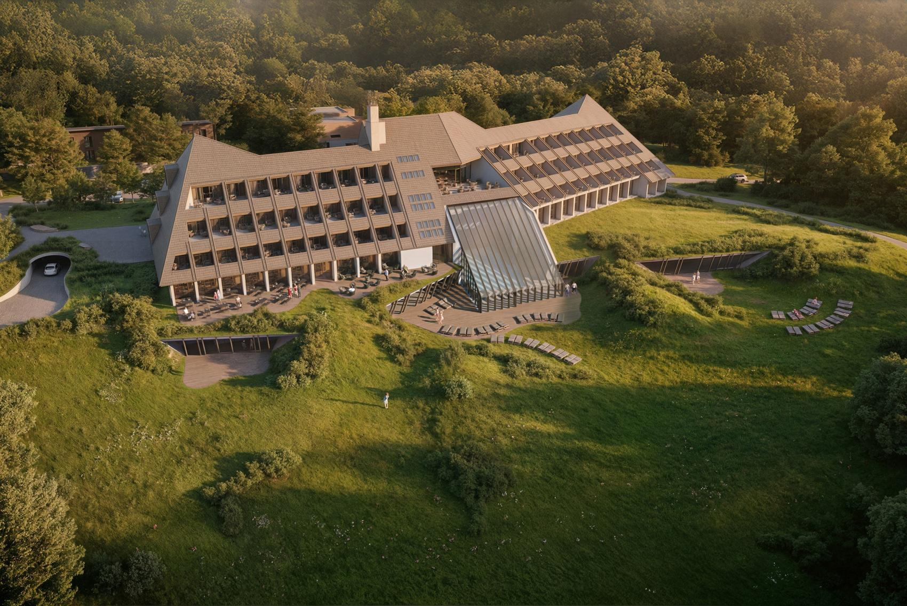
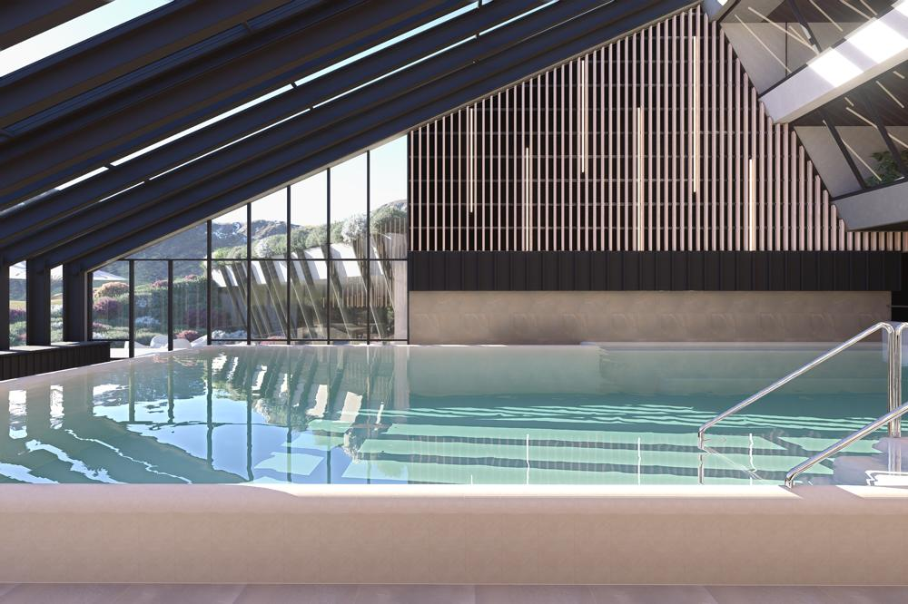
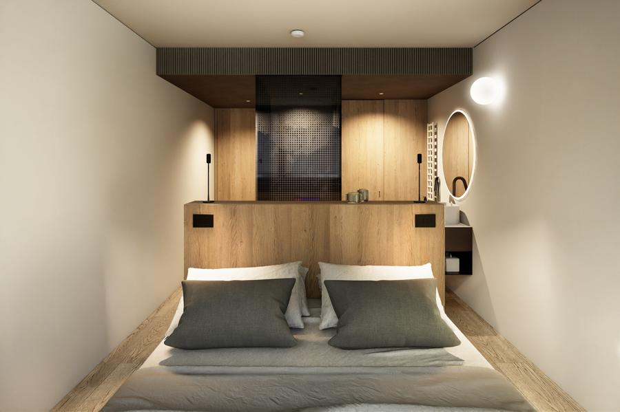
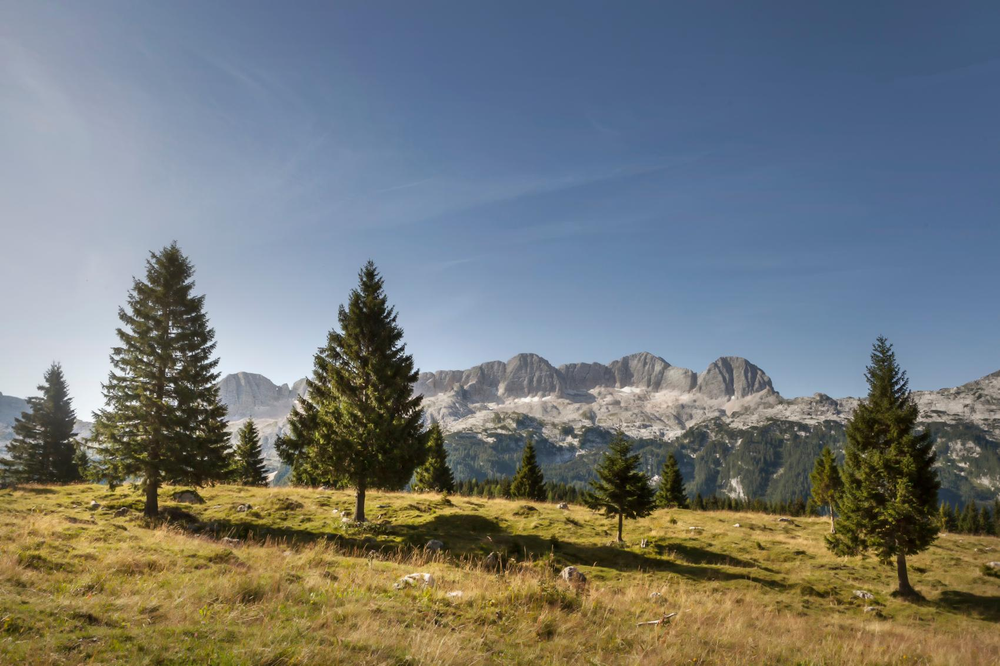

Hostfulness podcastBriefing za Roka Kokalja · stanje 9. 11. 2026 1/5

Gost epizode
Predrag Canjko
Generalni direktor, SPA Hotel Kanin Bovec
Hotel se po 13 letih zaprtja pripravlja na ponovno odprtje. Pogovor naj bo o tem, kako gostova izkušnja nastaja pred prvim gostom, ne o doseženih rezultatih.
Bovec, SlovenijaOdprtje: pomlad 2027 (napoved)
Vizualizacija: hotelkanin.com
Ni lastnik
Je generalni direktor od avgusta 2026.1 Lastnik je Ivan Fornazarič prek družbe FORIS d.o.o. (100 %).16
Hotel še ne obratuje
Odprtje je napoved za pomlad 2027. Objava iz avgusta 2025 je še omenjala 2026; zamika ne pripisujte Canjku.4,8
Isti, stari Kanin
Prenovljeni Lajovičev hotel iz začetka sedemdesetih, zaprt od oktobra 2013, z več propadlimi poskusi odprtja.4,14
98
sob in suit, od 19 do 60 m²
1.300 m²
wellnessa s panoramskim bazenom
4★ Superior
napovedana kategorija, prej 3★
80
gostov v glavni dvorani, plus 2 sejni sobi
2027
pomlad, napovedano odprtje

Panoramski bazen (vizualizacija)

Soba (vizualizacija)
Napovedana ponudba
Wellness 1.300 m²: panoramski bazen, savne, tretmaji, fitnes. Bazen in fitnes sta vključena v bivanje.4
Soba Alpina brez televizorja, a z Wi-Fi, balkonom in 210 cm posteljo. Zavesten odklop.5
Kulinarika: frika, soška postrv, lokalne sestavine, alpsko-mediteranska kuhinja, vinska klet in lobby bar.7
Tehnologija: HIQ/Robotina ga navaja kot referenco pametne modernizacije; končna postavitev ni potrjena.22
Lastna znamka, brez potrjene franšize. Ocen novega hotela še ni.
Na LinkedInu se predstavlja kot hotelirski vodja za ponovna odprtja, prestrukturiranje, prihodkovno rast in digitalno preobrazbo.1 Njegova rdeča nit niso stavbe, ampak to, da prenovljena stavba spet zaživi kot delujoča organizacija: v termah, v gorah in v kongresnem hotelu.
Teza, zanimiva za Nevron
Tehnologija mora postati povezan ekosistem, ne zbirka ločenih rešitev.2
Karierna pot
2005-2014
Terme Dobrna
F&B in širše hotelske odgovornosti, vodja gostinstva
2017-2019
Hotel Špik
direktor hotela
2019-2022
Terme Snovik
direktor, vodil tudi med epidemijo26,27
2022-2026
Terme Maribor
vodenje hotela; 2023 v medijih kot vodja Habakuka28
Nakup za okoli 2,7 mio €, nato okoli 3,2 mio € v sobe in wellness.12
2013
Zaprtje
Slabo povpraševanje in izpad zime po nesreči žičnice. 21 zaposlenih, stečaj, delavci poplačani le delno.13,14
2015-2018
Cubo Alp Resort
Dražba za 1,3 mio €, Sergej Vorožejkin s 50 %. Nova streha in okna, odprtje 2018 se ni zgodilo.14
od 2022
Fornazarič, FORIS
Nov razvojni cikel; od 2024 celovita obnova in nova podzemna garaža.15,18
Letnice se med viri razhajajo (1973 ali 1974), zato recite »hotel iz začetka sedemdesetih let«. Lastniki niso ena pravna oseba. Wellness ni nova ideja: bazen je imel že izvirni hotel.
Občutljive teme v pogovoru
Ni lastnik; zamud in odločitev predhodnikov mu ne pripisujte.
Odprtje je napoved, ne dokončno dejstvo.
Stečaj iz 2013 ni stvar novega lastnika; rusko lastništvo je preteklost.
Zaprtje je kraj stalo delovnih mest. Odprtje je tudi vračanje zaupanja.

Destinacija Bovec
Polno poleti, prazno pozimi: kaj je razlog za prihod februarja?
Foto: hotelkanin.com
621.121
nočitev v občini Bovec 2025, okoli 12 % več kot 202423
235.614
prihodov gostov v letu 2025
2,64 dni
povprečno bivanje
jul-avg
izrazit vrh, po septembru obisk upade
Delež nočitev gostov iz Nemčije (vsa Dolina Soče, ne samo Bovec)
Edini lastnik FORIS-a (100 %) in prokurist.16 Podjetnik z Vogrskega, živi in posluje v Dubaju. Ustanovitelj GORICA Group: prikolice in nadgradnje gospodarskih vozil na Bližnjem vzhodu; 2021 štiri družbe v treh državah, več kot tisoč zaposlenih.19
100 % lastništvo
Projektna družba
FORIS d.o.o.
Ustanovljena decembra 2021. Investitor prenove in delodajalec v zaposlitvenih oglasih.8,16
Boris Kosutadirektor družbe od 11. 8. 2026
Luka Fornazaričprokurist od junija 2026
gradi in vodi hotel
Hotel
Predrag Canjko, generalni direktor
SPA Hotel Kanin Bovec, od avgusta 2026. Operativni in komercialni zagon.6
Urška Radanovič Veljkovič Predhodna direktorica FORIS-a, leta 2025 direktorica Hotela Kanin. Ključna oseba razvojne faze pred Canjkom.16,24
Kaj razlikovati Direktor družbe ni isto kot direktor hotela. Prokura ne pomeni lastniškega deleža. Povezava z GORICA Group ne dokazuje, da skupina hotel financira.
Za Roka Canjko v projekt vstopi več let po nakupu. Za roke in odločitve pred avgustom 2026 ni odgovoren.
Denar v projektu
Državni seznam sofinanciranja iz Načrta za okrevanje in odpornost, projekt »Popolna rekonstrukcija hotela Kanin«:17
Vrednost investicije z DDV
10,95 mio €
Upravičeni stroški
3,21 mio €
Odobreno sofinanciranje
1,10 mio €
Razpisna vrednost ni nujno končni proračun, odobrena pomoč ni dokaz izplačila. Razmerje lastnih sredstev in posojil ni javno.
2007 · NAKUP HIT
2,7 mio €
kupnina, približno12
2008 · PRENOVA HIT
3,2 mio €
sobe in wellness, približno12
2015 · DRAŽBA
1,3 mio €
Alpe Adria Hoteli14
2022 · FORNAZARIČ
ni znano
1,3 mio € v člankih je kupnina iz 2015
Povezava s smučiščem Kanin
Ločena projekta, poslovno tesno povezana. Po besedah Urške Radanovič (februar 2025) se je Fornazarič za nakup odločil tudi zaradi obljub države o novi žičnici.20
FORIS in Soča Rafting sta povezana s konzorcijem Promotor, ki je julija 2026 oddal edino ponudbo na občinskem razpisu. Leitner, Riko in drugi člani niso lastniki hotela.
Vlada je 8. 10. 2026 podprla ponovni zagon smučišča in cilj do 60 mio € proračunskih sredstev. Datum ni zagotovljen.21
Leta 2013 je hotel zaprl tudi zaradi izgube zimske sezone. Tveganje je danes enako.
Previdnost: briefing povzema raziskavo Perplexity Deep Research (531 virov), ki je nihče ni neodvisno preveril. Potrjenega dolgega intervjuja s Canjkom ni. Podatki z LinkedIna so samoopis. Številke ob besedilu kažejo na seznam virov na zadnji strani.
Kako po propadlih zagonih zgraditi verodostojno obljubo
Uvod za branje
»Danes je z nami Predrag Canjko, generalni direktor SPA Hotela Kanin Bovec. Po izkušnjah v Snoviku in Habakuku zdaj sodeluje pri ponovnem rojstvu bovškega hotela. Govorila bova o tem, kako pred prihodom prvega gosta povezati ljudi, tehnologijo in lokalno okolje ter iz prenovljene stavbe ustvariti gostoljuben hotel.«
Vprašanja
Prevzem»Ko ste prišli v Kanin, ste prevzeli stavbo z več kot petdesetletno zgodovino in več poskusi ponovnega odprtja. Kaj ste morali najprej razumeti, preden ste začeli sestavljati svojo ekipo?«
Investitor»Vaš investitor prihaja iz industrije in mednarodne proizvodnje. Kje takšno razmišljanje hotelu koristi, kje pa mu morate kot hotelir razložiti, da gostoljubje deluje drugače?«
Uspeh»Kaj sta z lastnikom dogovorila kot merilo uspeha: datum odprtja, donosnost, celoletna delovna mesta ali ugled hotela? In kaj ima prednost, ko si ti cilji nasprotujejo?«
Zima»Hotel je nekoč zaprl tudi zaradi izgube zimske sezone. Kako danes izgleda vaš osnovni poslovni scenarij, če smučišče še nekaj časa ne obratuje?«
Wellness»Bazen in wellness sta bila del Kanina že prej. Zakaj naj bi današnji spa ustvaril drugačen razlog za prihod in daljše bivanje?«
Ekipa»Gost se po raftingu vrne premočen in soba še ni pripravljena: kdo sme kaj odločiti brez vas?«
Tehnologija»Katero povezavo med sistemi boste najprej preizkusili na celotni poti gosta in kako boste dokazali njeno vrednost?«
Izkušnje»Kaj ste iz ponovnega zagona Habakuka prenesli sem, česa pa namenoma ne?«
Kraj»Kaj morate narediti za lokalne zaposlene in prebivalce, da ponovno odprtje ne bo samo še ena napoved, ampak začetek novega zaupanja?«
Momenti resnice: scenariji za pogovor, ne potrjeni postopki
Pred prihodom
Gost ve, da je soba brez TV in kaj vključuje wellness.
Po raftingu
Najprej pomoč z mokro opremo, ne prodajni nagovor.
V sobi
Tišina in razgled; svetlobo uredi brez navodil.
Pri večerji
Lokalna jed in zgodba dobavitelja iz ust zaposlenega.
Ob odhodu
Pritožba rešena pred računom, ne na spletu.
Kdo je odgovoren?Kaj vidi v sistemu?Kaj sme odločiti sam?Kako veste, da je uspelo?
Kar lahko odpremo prvi (o tem javno še ni veliko govoril)